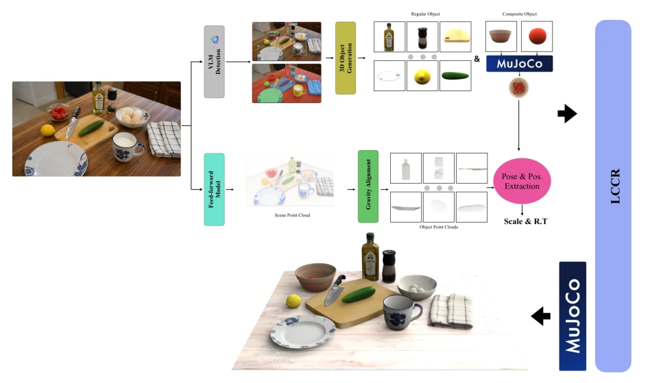
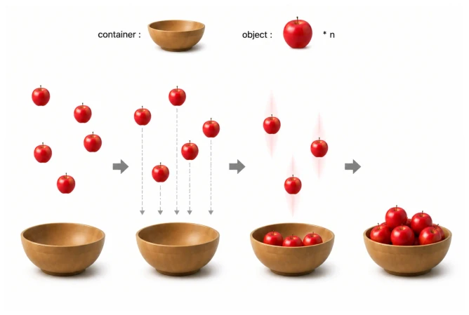
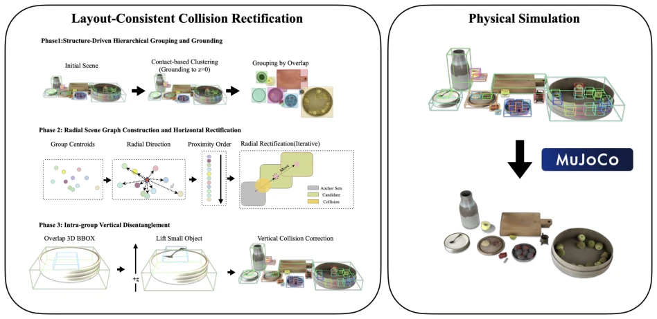
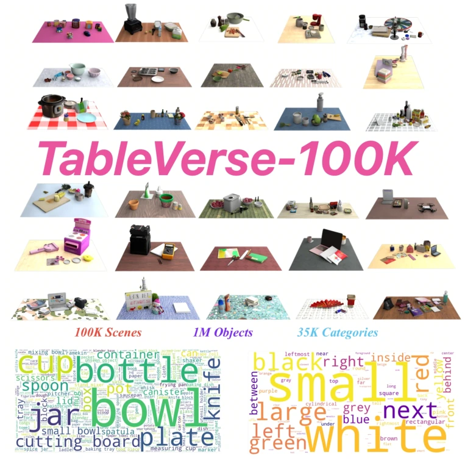
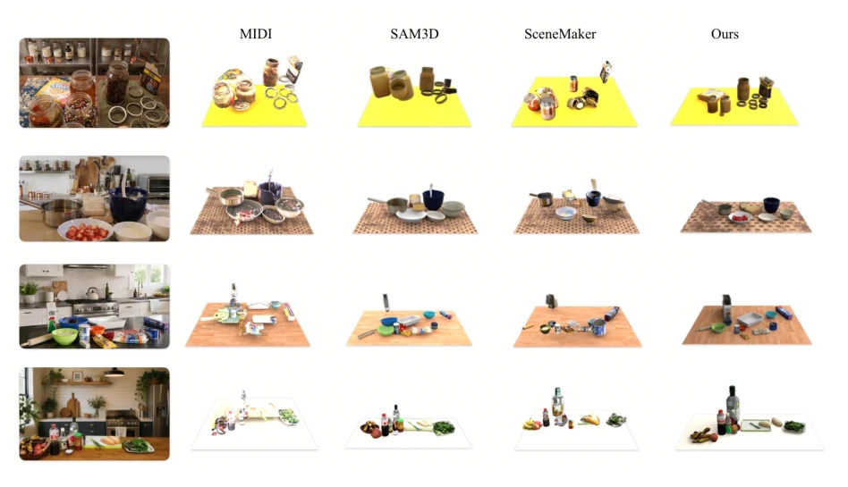
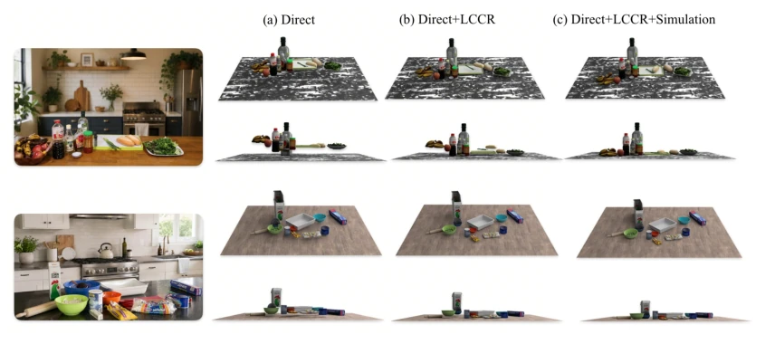
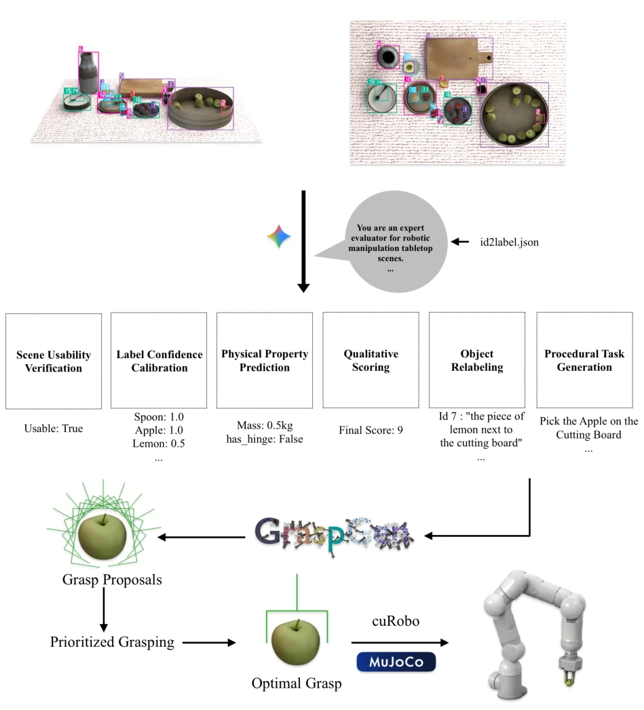
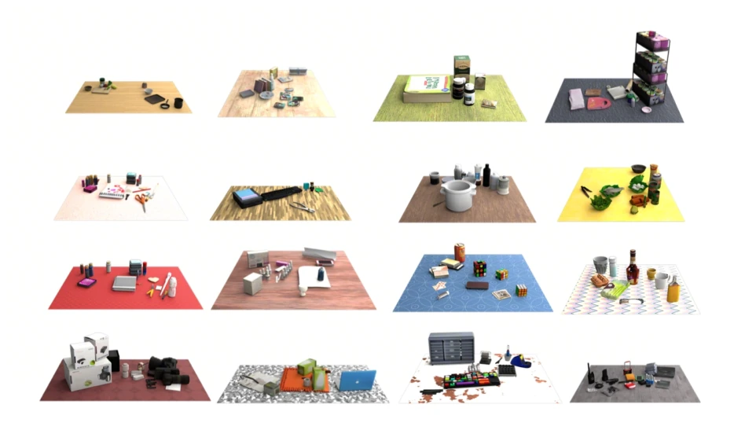
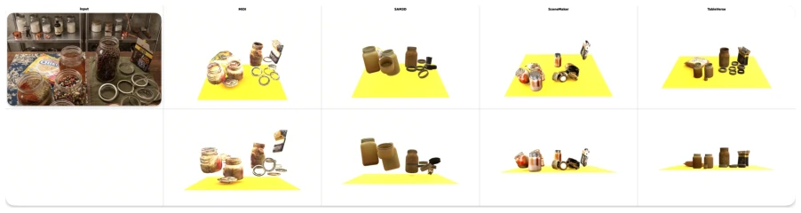

这篇论文试图用互联网图片无中生有造仿真场景，规模确实吓人，100K 场景、35K 类别，算是给具身智能喂了顿大餐。核心亮点是把幻觉生成变成了确定性重建，LCCR 模块解决碰撞问题挺巧妙。但别高兴太早，SAM3D 重建低分辨率物体时容易认假作真，而且全场景 3D 生成耗时巨大，推理速度是个瓶颈。虽然号称物理一致，但依赖 MLLM 做质检，成本不低。对于追求泛化性的机器人策略学习，这数据确实香，但能不能落地还得看推理成本和重建精度。此外，文中提到的物理一致更多指几何无穿插，真实物理属性如摩擦系数仍需依赖预测，这给真实迁移埋了隐患。
This paper attempts to fabricate simulation scenes from internet images out of thin air; the scale is indeed staggering, with 100K scenes and 35K categories, essentially serving a feast to embodied intelligence. The core highlight is transforming hallucination generation into deterministic reconstruction; the LCCR module solves collision problems quite ingeniously. But do not rejoice too early; SAM3D tends to mistake fake for real when reconstructing low-resolution objects, and full-scene 3D generation consumes huge time, making inference speed a bottleneck. Although claiming physical consistency, it relies on MLLM for quality inspection, which is not low cost. For robot policy learning pursuing generalization, this data is indeed attractive, but whether it can be deployed depends on inference cost and reconstruction accuracy. Furthermore, the physical consistency mentioned in the text mostly refers to geometric non-intersection; real physical attributes such as friction coefficients still rely on prediction, which lays hidden dangers for real-world transfer.
研究动机Motivation
通用机器人操作策略受限于高质量仿真数据。现有自动化生成方法如 MIDI [Huang et al., 2025] 和 SceneMaker [Shi et al., 2025] 在处理密集遮挡和复杂拓扑时崩溃，产生严重网格穿插，无法用于物理仿真。语言驱动的 Layout 生成如 Holodeck [Yang et al., 2023] 缺乏几何 grounding，布局过于稀疏。Tabletop 专用数据集如 TO-Scene [Xu et al., 2022] 依赖 CAD 模型堆叠，缺乏真实杂乱分布。MesaTask-10K [Hao et al., 2026] 也有过度整洁的偏差。TableVerse 旨在填补这一 Reality Gap，从非结构化网络数据构建物理一致的数字孪生，解决密集杂乱场景下的仿真数据匮乏问题。
General robot manipulation strategies are limited by high-quality simulation data. Existing automated generation methods such as MIDI [Huang et al., 2025] and SceneMaker [Shi et al., 2025] collapse when handling dense occlusions and complex topologies, producing severe mesh intersections, making them unusable for physical simulation. Language-driven Layout generation like Holodeck [Yang et al., 2023] lacks geometric grounding, with layouts being too sparse. Tabletop-specific datasets like TO-Scene [Xu et al., 2022] rely on stacking CAD models, lacking real-world cluttered distributions. MesaTask-10K [Hao et al., 2026] also has a bias towards excessive tidiness. TableVerse aims to fill this Reality Gap, constructing physically consistent digital twins from unstructured web data to solve the scarcity of simulation data in dense cluttered scenes.
The overall process is a Real2Sim automated closed loop. First, open-vocabulary detection and segmentation are performed using Seed-1.8 and SAM2, and SAM3D reconstructs 3D meshes. The key innovation lies in the LCCR module: eliminating horizontal collisions through hierarchical contact grouping and radial graph construction, followed by vertical decoupling, and finally physical stabilization via MuJoCo. Dataset construction introduces Gemini 2.5 Pro for seven-dimensional quality inspection and task generation. Trajectory generation uses GraspGen for 6D grasping and cuRobo for planning collision-free paths. The entire process converts single-view images into interactive MuJoCo simulation environments. Additionally, for compound objects, free-fall simulation assembly is adopted to ensure internal objects are independently manipulable, solving the problem of visible but untouchable in traditional methods.

Figure 2: Overview of the TableVerse pipeline for automated tabletop scene synthesis. Given an unstructured, single-view real-world observation, our framework constructs physics-ready digital twins through four sequential stages: (1) Instance Extraction: performing open-vocabulary object detection and high-fidelity mask generation; (2) Composite Asset Deconstruction: uncoupling nested entities via 3D reconstruction and isolated free-fall assembly; (3) Metric Scale & Pose Alignment: extracting scene point clouds and executing a coarse-to-fine registration to regress precise dimensions and 6-DoF poses; and (4) LCCR & Physics Stabilization: resolving mesh interpenetrations via a layout-consistent geometric optimization under topological constraints, followed by a final MuJoCo simulation to se

Figure 3: Physics-guided assembly workflow for composite object generation. To enrich asset diversity and interac- tion complexity during the manipulation process, our pipeline structurally uncouples composite entities. Individual components (the container and its nested contents) are reconstructed as separate isolated meshes via SAM3D, and subsequently initialized within an isolated MuJoCo environment. Running a brief free-fall simulation allows the internal items to naturally “drop” and settle into the container, establishing valid physical contacts and preserving independent structural manipulation properties for downstream tasks.

Figure 4: Detailed schematic of the Layout-Consistent Collision Rectification (LCCR) module. The pipeline ingests initially registered overlapping meshes and resolves spatial intersections through three sequential phases: (1) Hierarchical Contact Grouping & Grounding: clustering adjacent assets and decoupling intentional vertical stacking from horizontal clutter via a 2D overlap threshold; (2) Radial Graph Construction & Horizontal Rectification: building a proximity-driven radial scene graph and rigidly translating entities along azimuthal layout vectors to eliminate lateral overlap; and (3) Vertical Disentanglement & Physics Stabilization: adjusting z-axis heights within stacked groups to resolve remaining vertical intersections, followed by a gravity-driven MuJoCo simulation to naturall
Constructed TableVerse-100K dataset, containing 100K scenes. Compare baselines MIDI [Huang et al., 2025], SAM3D [Chen et al., 2025], SceneMaker [Shi et al., 2025]. Metrics include scene collision rate and MLLM scores LF, VQ, GQ. TableVerse collision rate is 0%, GPT-Score leads comprehensively. Ablation experiments show that only LCCR eliminates geometric collisions, but needs to be paired with MuJoCo simulation to eliminate micro-gaps. Texture randomization enhances generalization. Proves the effectiveness of reconstruction from real images to physical simulation scenes. The dataset covers 1M object instances, with rich long-tail distribution, providing a solid foundation for policy learning.

Figure 1: Statistical overview and scale of the TableVerse-100K dataset. Our framework establishes an unprecedented milestone in automated Real2Sim tabletop asset production, encompassing 100K physically consistent and real-world grounded interactive scenes, nearly 1M distinct individual object instances, and spanning more than 35K diverse semantic categories. This massive scale provides a rich, long-tail data distribution to foster robust, highly generalizable visuomotor policy learning for robotic manipulation.

Figure 7: Comparisons with Alternative Methods.

Figure 8: Qualitative ablation of the LCCR module. (a) Direct alignment exhibits severe, unsimulable mesh interpene- trations. (b) Direct + LCCR eliminates collisions geometrically but introduces floating artifacts and micro-gaps. (c) Our full pipeline leverages MuJoCo simulation to settle objects into a stable, physics-ready resting state.
其他图片Other Figures

Figure 5: Detailed schematic of the MLLM-driven curation and annotation pipeline. Multi-view orthographic and bird’s-eye renderings are concatenated into a visual composite for Gemini 2.5 Pro to execute a coordinated seven- dimensional scenario assessment, physical attribute prediction, and structured pick-and-place task generation.

Figure 6: Visualization of diverse tabletop texture augmentations in TableVerse. Over 1,700 unique, high-resolution texture maps are dynamically applied to the table surfaces to expand visual diversity for robust domain randomization.

Figure 9: An example of the concatenated 2×5 grid image provided as the input observation to the MLLM. Row 1 contains the real-world reference image followed by front-oblique renderings of the four methods. Row 2 consists of a blank slot followed by pure front-view renderings used to inspect vertical alignment and physical artifacts.